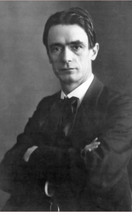

Hilma af Klint
Inspiration and Influence

Rudolf Steiner
- Began her spiritual journey in 1880, when Hermina (younger sister) died.
- af Klint became interested in spiratism through other philosophers and artists in the 1880s through 1910s.
- Was most inspired by Rudolf Steiner (founder of Anthroposophical Society) because of his theories regarding the Arts.
- af Klint, like many of the other artists in the period that were inspired by the Theosophical Movement, became to be known as abstract and Modernist.